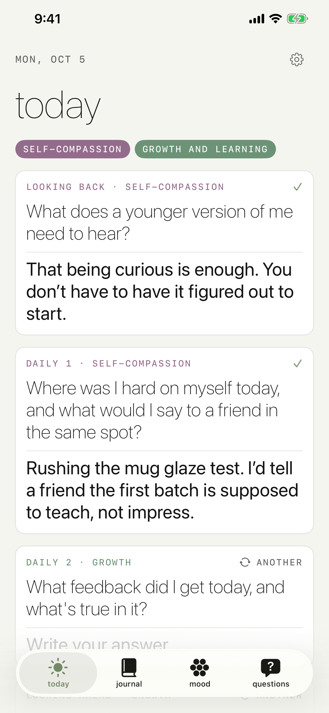
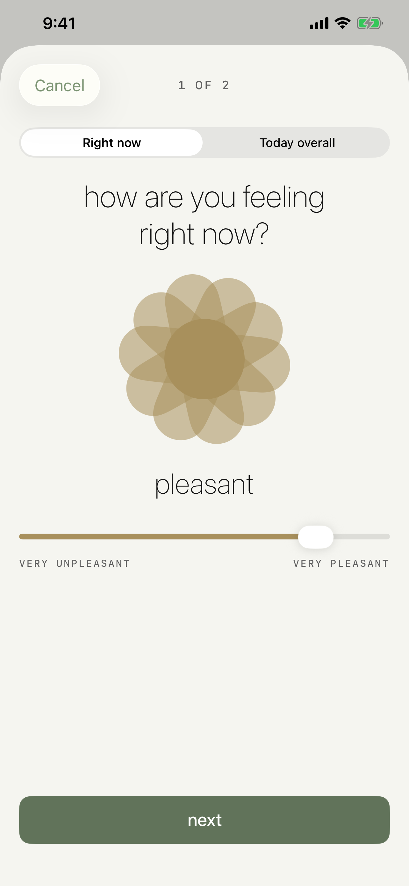
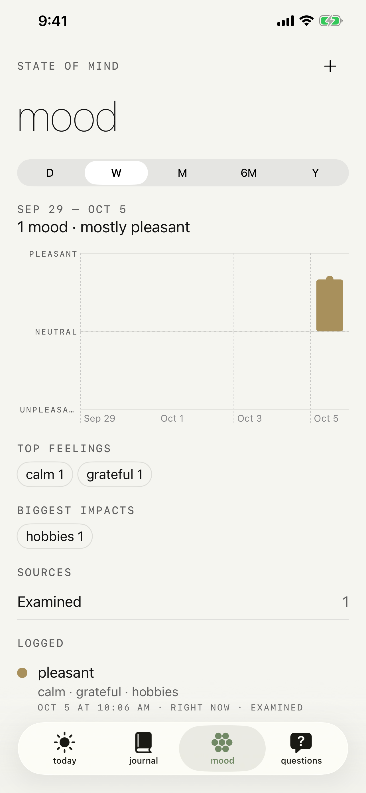
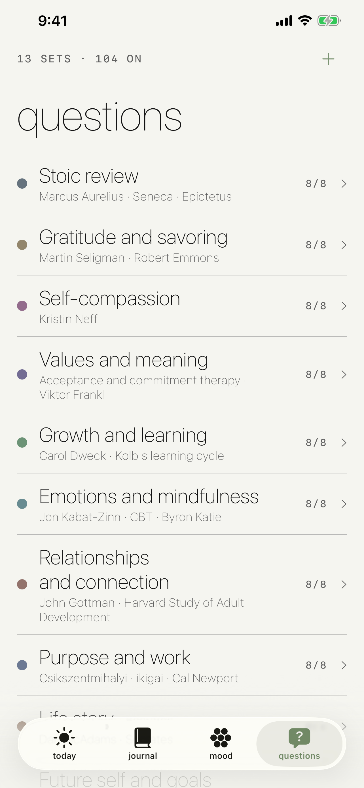
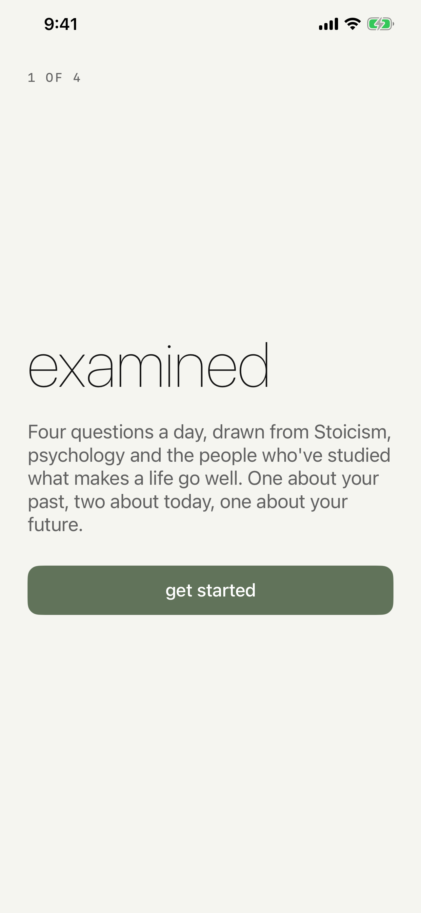
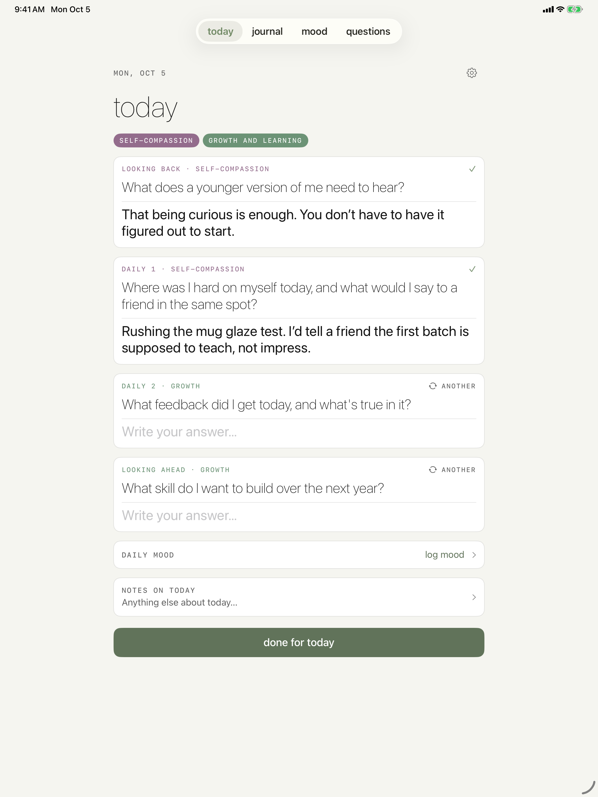
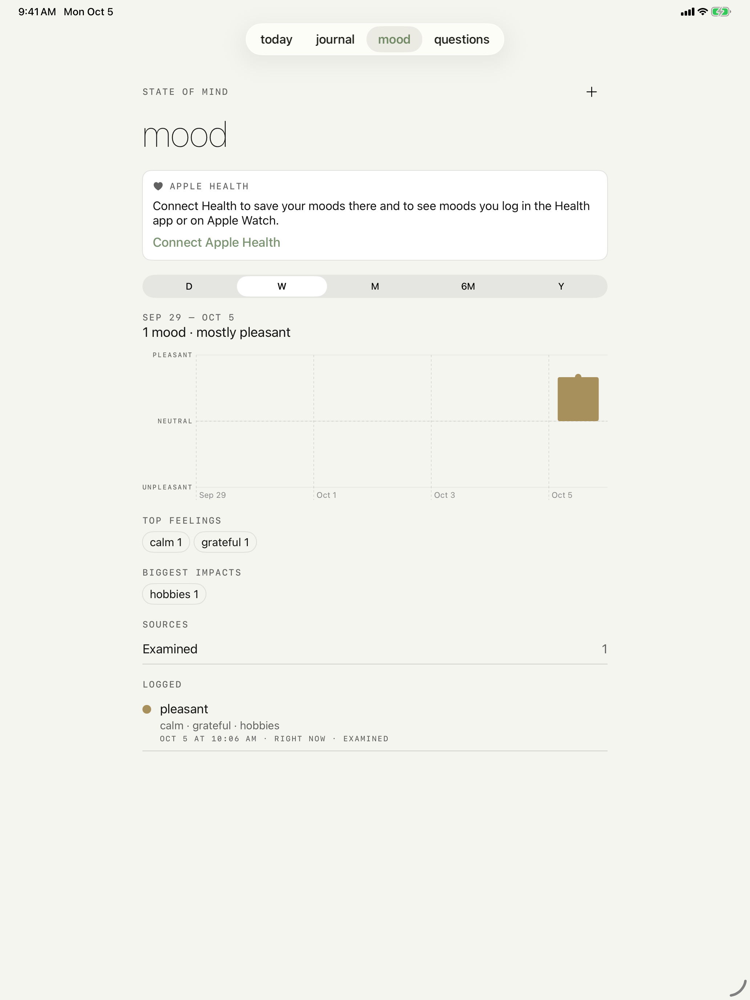
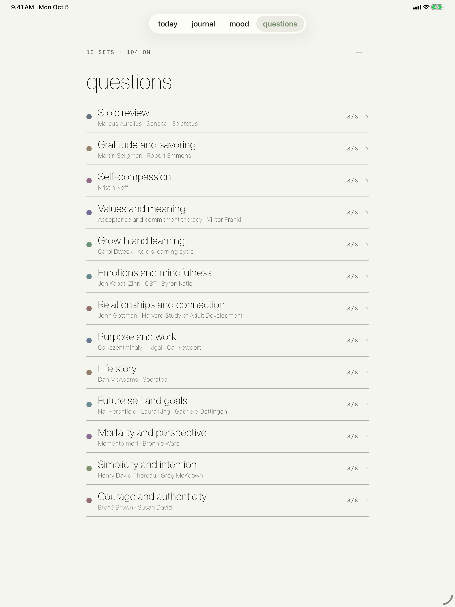

Examined
Four questions a day. A journal that asks before it listens.
Four questions a day. A journal that asks before it listens.
Examined is a journal that starts with a prompt instead of a blank page. Each day it asks four questions — one about the past, two about today, one about the future — drawn from thirteen themed question sets. Answer, swap a question for another, log how you feel, or just write a free note. Everything lands in a journal you can browse by day.
iPhone





iPad



Past, today, today, future — pulled from thirteen themed sets, with an easy swap when one doesn't land.
Log how you feel the way the Health app does, and save it to Health's State of Mind if you choose.
Browse entries by day, follow a question over time, and export everything as Markdown.
Optional Face ID lock and iCloud sync. No account, no servers, no analytics.
Keep Exploring
Back to the productivity apps